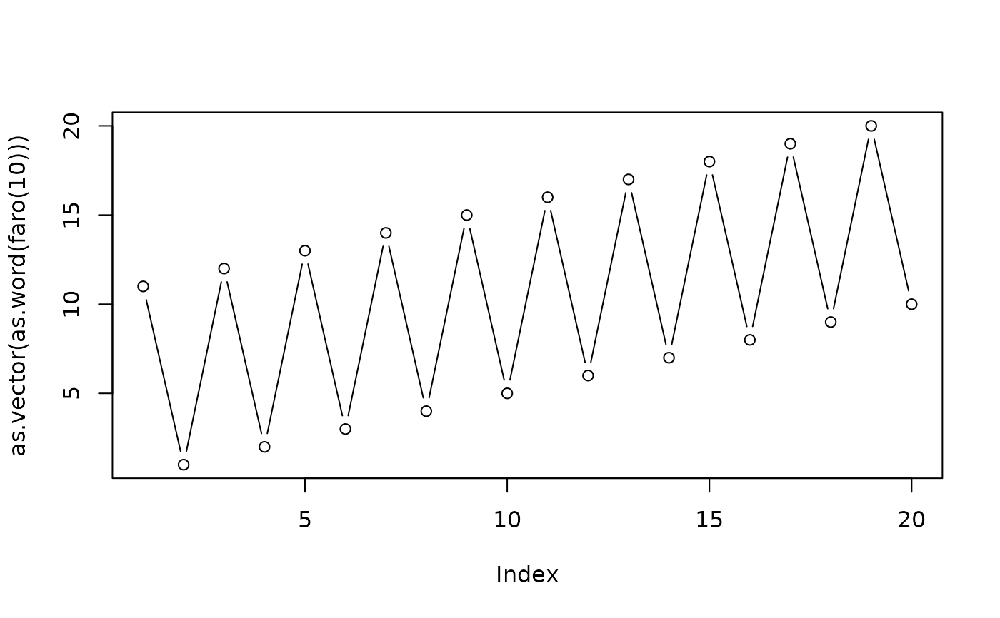
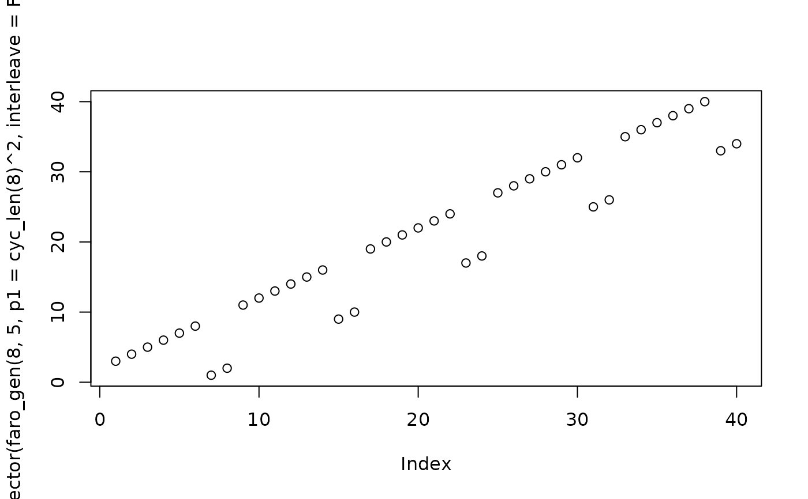

Faro shuffles
faro.RdA faro shuffle, faro(),is a permutation of a deck of
\(2n\) cards. The cards are split into two packs, 1:n and
(n+1):2n, and interleaved: cards are taken alternately from top
of each pack and placed face down on the table. A faro
out-shuffle takes the first card from 1:n and a faro
in-shuffle takes the first card from (n+1):(2*n).
A generalized faro shuffle, faro_gen(), splits the pack
into m equal parts and applies the same permutation (p1)
to each pack, and then permutes the packs with p2, before
interleaving. The interleaving itself is simply a matrix transpose; it
is possible to omit this step by passing interleave=FALSE.
Arguments
- n
Number of cards in each pack
- m
Number of packs
- p1,p2
Permutations for cards and packs respectively, coerced to word form
- interleave
Boolean, with default
TRUEmeaning to actually perform the interleaving andFALSEmeaning not to- out
Boolean, with default
TRUEmeaning to return an out-shuffle andFALSEmeaning to return an in-shuffle
Examples
faro(4)
#> [1] (157842)(36)
#> [coerced from word form]
faro(4,FALSE)
#> [1] (253)(467)
#> [coerced from word form]
## Do a perfect riffle shuffle 52 times, return pack to original order:
permorder(faro(26))
#> [1] 52
## 15 cards, split into 5 packs of 3, cyclically permute each pack:
faro_gen(3, 5, p1=cyc_len(3), interleave=FALSE)
#> [1] (1,2,3)(4,5,6)(7,8,9)(10,11,12)(13,14,15)
#> [coerced from word form]
## 15 cards, split into 5 packs of 3, permute the packs as (13542):
print_word(faro_gen(3, 5, p2=as.cycle("(13542)"), interleave=FALSE))
#> 1 2 3 4 5 6 7 8 9 10 11 12 13 14 15
#> [1] 7 8 9 1 2 3 13 14 15 4 5 6 10 11 12
sapply(seq_len(10),function(n){permorder(faro(n,FALSE))}) # OEIS A002326
#> [1] 1 2 4 3 6 10 12 4 8 18
plot(as.vector(as.word(faro(10))),type='b')

plot(as.vector(faro_gen(8,5,p1=cyc_len(8)^2,interleave=FALSE)))
